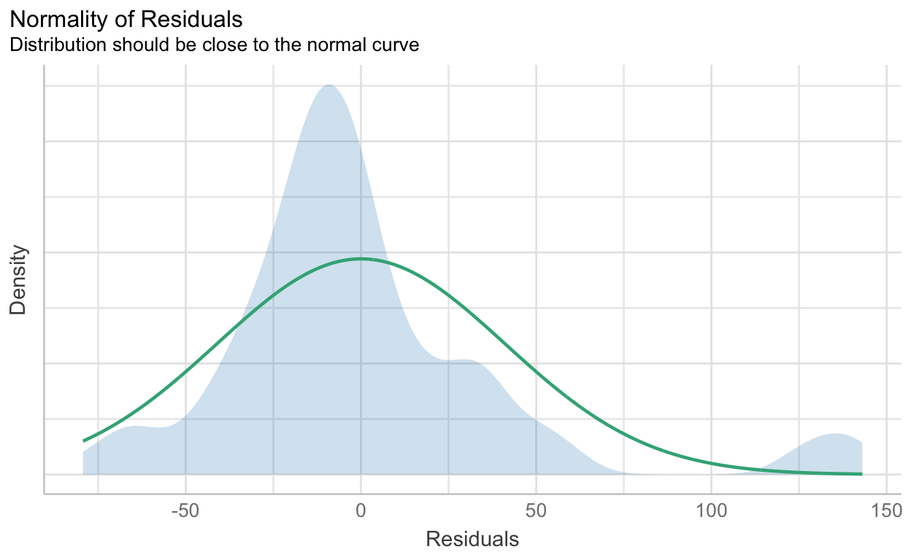
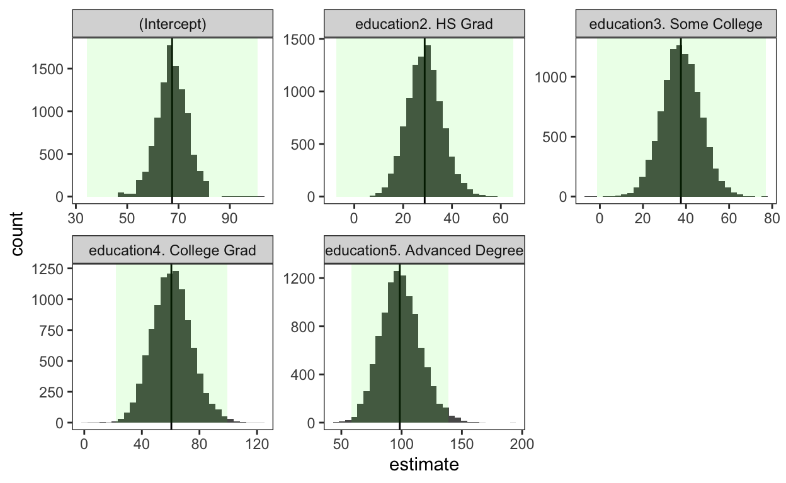
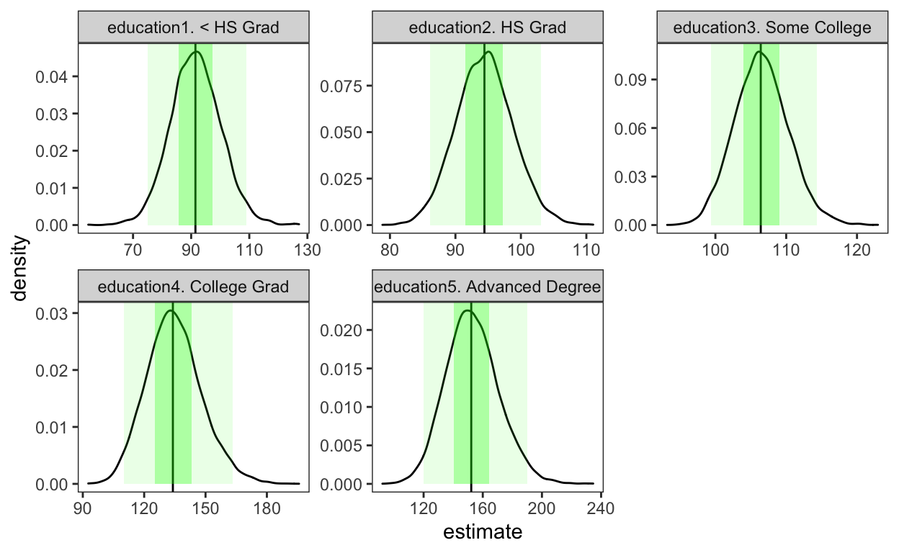
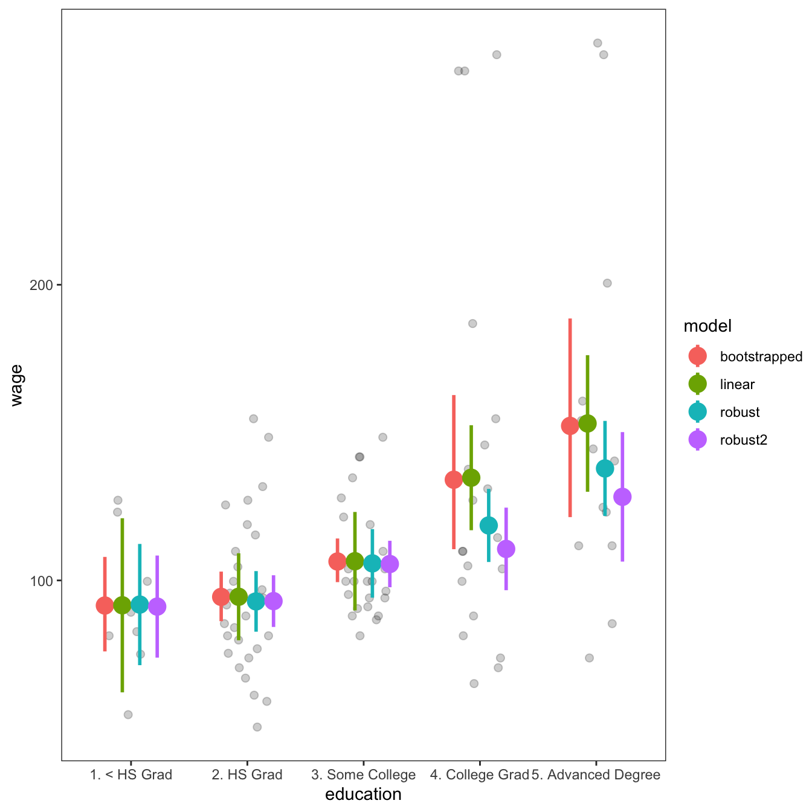
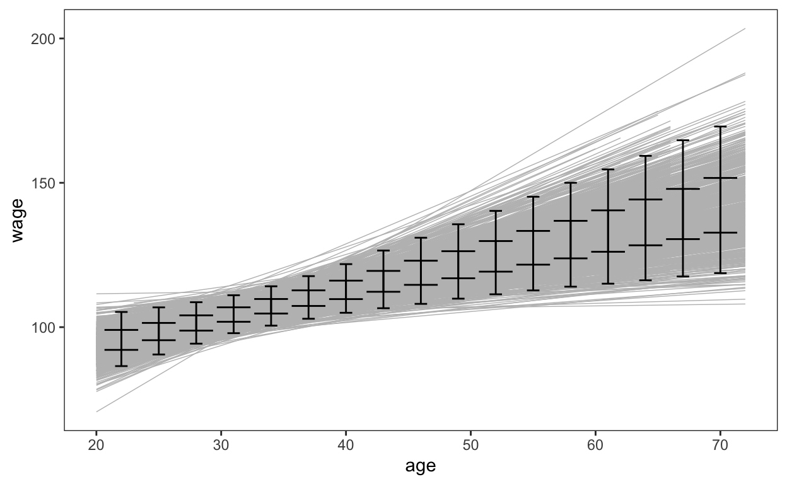

This post as a video (in making)
I recommend to watch a video first, because I highlight things I talk about. It’s less then … minutes long.
The problem with ordinary linear models
If we want to compare salaries of people with different education, we could create a simple linear model and plot the results. But we can not trust these results, without checking the assumptions of our model, because if assumptions are violated, the results might be wrong. However, the problem with assumptions is that there are too many, and most of the time we can’t satisfy them all.
library(tidymodels) # for everything good in R ;)
library(ISLR) # for "Wage" dataset
set.seed(9999) # makes sure we get the same 100 lines
salary <- Wage %>%
sample_n(100)
m <- lm(wage ~ education, salary)
library(sjPlot) # I have a video on "sjPlot" 📦
theme_set(theme_test())
plot_model(m, type = "pred", show.data = TRUE, jitter = TRUE)$education
For instance, our model has not-normally distributed residuals, the variances between groups differ and we have heteroskedasticity. So, we can’t trust our results, without fixing them, but when we start fixing assumptions, we might (1) either lose data (if, for example, we remove some influential points), (2) we might reduce interpretability (when we log-transform data) or screw up other assumptions even more, because data manipulation constantly changes the parameters of our - parametric model. And here is where non-parametric bootstraped regression comes into play.
library(performance) # I have a video on "performance" 📦
check_normality(m) # Shapiro-Wilk normality testWarning: Non-normality of residuals detected (p < .001).check_normality(m) %>% plot(type = "qq")check_homogeneity(m) # Bartlett test Warning: Variances differ between groups (Bartlett Test, p = 0.000).check_homogeneity(m) %>% plot()
check_heteroscedasticity(m) # Breusch-Pagan testWarning: Heteroscedasticity (non-constant error variance) detected (p < .001).check_heteroscedasticity(m) %>% plot()
Why should we nonparametrically bootstrap regressions?
The 4 reasons a bootstrapped model is better then usual linear model, is that bootstrapping:
does not have any distributional assumptions (such as normally distributed residuals or equal variances among groups)
bootstrapped models provide more accurate inferences, e.g. confidence intervals 1, which we’ll soon prove on these two examples, one with categorical and one with numeric predictors
bootstrapped models work better for small samples and finally
it describes variation in the data much better than traditional linear models
Therefore, having bootstrapped models in your tool-box will definitely make you a better data-scientist! So …
What is - a bootstrap?
In order to better understand how bootstrap models work, we need to understand what the bootstrap itself actually is. A bootstrapp is the little loop on the back of a boot to help you pool it on. And the phrase “pulling oneself up by one’s bootstraps” means to succeed without any external help. For data it simply means - resampling.
library(ggstatsplot) # I made many videos on "ggstatsplot" 📦
ggbetweenstats(data = salary, x = education, y = wage)
So, lets (1) take a very small dataset, (2) resample it 1000 times, (3) calculate bootstrapped coefficients & 95% CIs and (4) compare them to the ordinary regression in order to find out whether bootstrapping model is indeed better!
4 steps to compute bootstrapped regression
There are only 4 steps to conduct and visualize bootstrapped regression.
1. Bootstrap the data with resampling
First, we bootstrap the data, which simply means we take 1000 samples from our 100 data rows. Every of those 1000 samples is of the same size as the original data set, namely 100 rows, but is made using replacements, which results into multiple replicates of some of the original rows of the data. Replacements are necessary, because we would otherwise simply reproduce the original sample. (The assessment set contains the rows of the original data that were not included in the bootstrap sample.) In order to distinguish bootstrapped samples from the original sample let’s call our bootstrapped samples - splits.
set.seed(123)
# 1000 samples are OK, but with 2000-10000 you are save!
boot_data <- bootstraps(salary, times = 1000)
boot_data# Bootstrap sampling
# A tibble: 1,000 × 2
splits id
<list> <chr>
1 <split [100/41]> Bootstrap0001
2 <split [100/38]> Bootstrap0002
3 <split [100/42]> Bootstrap0003
4 <split [100/40]> Bootstrap0004
5 <split [100/30]> Bootstrap0005
6 <split [100/30]> Bootstrap0006
7 <split [100/36]> Bootstrap0007
8 <split [100/35]> Bootstrap0008
9 <split [100/32]> Bootstrap0009
10 <split [100/36]> Bootstrap0010
# … with 990 more rowsboot_data$splits[[1]]<Analysis/Assess/Total>
<100/41/100>2. Produce 1000 models
Then we fit a linear model to every split using the first map() function and tidy up model coefficients with the second map() function. Let’s use “0 +” in the model formula to remove the Intercept, because we are interested in estimates of the salary and not the slope of change from that Intercept.
boot_models <- boot_data %>%
mutate(model = map(splits, ~lm(wage ~ 0 + education, data = .)),
coefs = map(model, tidy) ) # optional "conf.int = TRUE"
boot_models# Bootstrap sampling
# A tibble: 1,000 × 4
splits id model coefs
<list> <chr> <list> <list>
1 <split [100/41]> Bootstrap0001 <lm> <tibble [5 × 5]>
2 <split [100/38]> Bootstrap0002 <lm> <tibble [5 × 5]>
3 <split [100/42]> Bootstrap0003 <lm> <tibble [5 × 5]>
4 <split [100/40]> Bootstrap0004 <lm> <tibble [5 × 5]>
5 <split [100/30]> Bootstrap0005 <lm> <tibble [5 × 5]>
6 <split [100/30]> Bootstrap0006 <lm> <tibble [5 × 5]>
7 <split [100/36]> Bootstrap0007 <lm> <tibble [5 × 5]>
8 <split [100/35]> Bootstrap0008 <lm> <tibble [5 × 5]>
9 <split [100/32]> Bootstrap0009 <lm> <tibble [5 × 5]>
10 <split [100/36]> Bootstrap0010 <lm> <tibble [5 × 5]>
# … with 990 more rows3. Plot estimates distribution of 1000 estimates
# A tibble: 5,000 × 2
term estimate
<chr> <dbl>
1 education1. < HS Grad 85.5
2 education2. HS Grad 87.3
3 education3. Some College 107.
4 education4. College Grad 127.
5 education5. Advanced Degree 174.
6 education1. < HS Grad 85.0
7 education2. HS Grad 95.1
8 education3. Some College 109.
9 education4. College Grad 150.
10 education5. Advanced Degree 149.
# … with 4,990 more rowsNow, we not only have 1000 models, which are nested in the column “model”, but also the results of those models which are nested in the column “coefficients”. And if we unnest() the coefficients, we’ll see 5 estimates for every of our 1000 models. It’s like we have done 1000 experiments, which we can immediately visualize as a distribution.
boot_coefs %>%
ggplot(aes(x = estimate)) +
geom_histogram() +
facet_wrap(~term, scales = "free")
First of all, the distributions seem normal, or bell-shaped, which is already amazing because we can use average estimates ;). But despite normal distribution, I still would prefer median estimate for every group instead of the mean. That makes our non-parametric estimates even more robust, since median is estimated by another wonderful robust technique - quantile-regression, which is also used when the assumptions of linear regression are not met. I find it really cool! But the coolest thing about this distribution and quantile-function is that we can easily get not only classic 95% Confidence Intervals, but any intervals we want. Which is kind of hard to get out of the ordinary model. Thus, we actually have more than 4 advantages 🥳 of the bootstrapped model.
boot_meds <- boot_coefs %>%
group_by(term) %>%
summarise(
med_est = median(estimate),
quantile = quantile(estimate, 0.5 ),
conf.low = quantile(estimate, 0.025),
conf.high = quantile(estimate, 0.975),
conf.25 = quantile(estimate, 0.25 ),
conf.75 = quantile(estimate, 0.75 ))
boot_meds# A tibble: 5 × 7
term med_est quant…¹ conf.…² conf.…³ conf.25 conf.75
<chr> <dbl> <dbl> <dbl> <dbl> <dbl> <dbl>
1 education1. < HS Gr… 91.4 91.4 75.9 108. 85.8 97.3
2 education2. HS Grad 94.4 94.4 86.9 103. 91.5 97.3
3 education3. Some Co… 106. 106. 99.5 114. 104. 109.
4 education4. College… 134. 134. 110. 165. 126. 143.
5 education5. Advance… 153. 153. 119. 191. 140. 164.
# … with abbreviated variable names ¹quantile, ²conf.low, ³conf.highAnd when we plot our estimates we can clearly see that 50% of people who did not finish a high school, will never reach a salary of 100 thousands, while 95% of folks with higher education will never earn below 100 thousands bugs. Waw! So, education matters!
boot_coefs %>%
ggplot(aes(x = estimate)) +
geom_rect(aes(x = med_est, xmin = conf.low, xmax = conf.high, ymin = 0, ymax = Inf), data = boot_meds, alpha = 0.1, fill = "green") +
geom_rect(aes(x = med_est, xmin = conf.25, xmax = conf.75, ymin = 0, ymax = Inf), data = boot_meds, alpha = 0.3, fill = "green") +
geom_density() +
geom_vline(data = boot_meds, aes(xintercept = med_est))+
facet_wrap(~term, scales = "free")
But what blew my mind even more the first time I learned to bootstrap regression estimates, is that I can even get a distribution of p-values :). For that we just (1) remodel 1000 … ahhh, what a hell, let’s remodel 10.000 models with the Intercept, (2) unnest out coefficients again and (3) visualize the distribution of our 10.000 p.values. Now you see why it’s always better to take median instead of mean.
boot_models <- bootstraps(salary, times = 10000) %>%
mutate(model = map(splits, ~lm(wage ~ education, data = .)),
coefs = map(model, tidy) ) # optional "conf.int = TRUE"
boot_coefs <- boot_models %>%
unnest(coefs) %>%
select(term, p.value)
boot_coefs %>%
ggplot(aes(x = p.value)) +
geom_histogram() +
facet_wrap(~term, scales = "free")
And if we compare mean and median bootstrapped p.values to the p.values from the ordinary models, we’ll see that median bootstrapped p.values are much closer to the the p.values of the ordinary model. And despite the fact that median p.values and ordinary p.values are only slightly different, I would still intuitively trust the bootstrapped p.values more, because they were produced in a statistically robust fashion, where no assumptions were violated.
boot_coefs %>%
group_by(term) %>%
summarise(
mean_boot_p = mean(p.value),
med_boot_p = median(p.value)
) %>%
# remember? m <- lm(wage ~ education, salary)
left_join(tidy(m) %>% select(term, p.value)) %>%
mutate_if(is.numeric, ~round(., 4))# A tibble: 5 × 4
term mean_boot_p med_boot_p p.value
<chr> <dbl> <dbl> <dbl>
1 (Intercept) 0.0003 0 0
2 education2. HS Grad 0.652 0.686 0.862
3 education3. Some College 0.417 0.374 0.384
4 education4. College Grad 0.0632 0.0153 0.0145
5 education5. Advanced Degree 0.0238 0.0017 0.00154. Get and visualize predictions
Finally, here is the moment we’ve been waiting for:
- let’s use the
augment()command to produce predictions for every of our 10.000 models, - then calculate a median and 95% CIs from our predictions
- calculate predictions made by the ordinary linear regression
- combine two results into one dataset and
- compare them visually by
- first plotting our original 100 observations and then
- display predictions of both models to see which describes the data best
# get predictions
boot_aug <- boot_models %>%
mutate(augmented = map(model, augment)) %>%
unnest(augmented) %>%
select(-splits, -model)
# get median estimates, median 95% CIs
nonpar_med_boot_preds <- boot_aug %>%
group_by(education) %>%
summarise(
predicted = median(.fitted ),
conf.low = quantile(.fitted, 0.025),
conf.high = quantile(.fitted, 0.975)) %>%
mutate(model = "bootstrapped") %>%
select(model, everything())
nonpar_med_boot_preds# A tibble: 5 × 5
model education predicted conf.low conf.high
<chr> <fct> <dbl> <dbl> <dbl>
1 bootstrapped 1. < HS Grad 91.6 75.9 108.
2 bootstrapped 2. HS Grad 94.4 86.1 103.
3 bootstrapped 3. Some College 106. 99.4 114.
4 bootstrapped 4. College Grad 134. 110. 163.
5 bootstrapped 5. Advanced Degree 152. 122. 189.# get mean estimates from the classic model
m <- lm(wage ~ education, salary) # just a reminder
par_avg_preds <- ggeffects::ggeffect(m, terms = "education") %>%
tibble() %>%
mutate(model = "linear") %>%
select(model, education = x, predicted, conf.low, conf.high)
par_avg_preds# A tibble: 5 × 5
model education predicted conf.low conf.high
<chr> <fct> <dbl> <dbl> <dbl>
1 linear 1. < HS Grad 91.6 62.2 121.
2 linear 2. HS Grad 94.5 79.8 109.
3 linear 3. Some College 106. 89.8 123.
4 linear 4. College Grad 135. 117. 152.
5 linear 5. Advanced Degree 153. 130. 176.# combine two datasets
preds <- rbind(nonpar_med_boot_preds, par_avg_preds)
# plot row data and predicted CIs from both models
ggplot() +
geom_jitter(data = salary, aes(education, wage),
width = .2, alpha = 0.2, size = 2)+
geom_pointrange(data = preds, aes(x = education, y = predicted,
ymin = conf.low, ymax = conf.high, color = model),
position=position_dodge(width=.6), size = 1)
Interestingly, the bootstrapped confidence intervals are slimmer where the variance is low and wider, where the variance is high. So, as mentioned in the beginning, bootstrapped models describe the variation in the data better and produce therefore more accurate and realistic inferences without violating any assumptions, especially for small samples.
Bootstrapping numeric predictors
Bootstrapping with numeric predictors works in the same way, so, let’s summarise all we have learned so far, namely:
- we first create 1000 resamples of our data,
- then
map()over it to fit new 1000 models, with the numeric predictor “age” - we then
map()over every model and useaugment()function to extract fitted data for every model in an new nested column, with 100 fitted values for every model, because every resample in boot_data has 100 observations. - 1000 models with 100 fitted values each result in 100.000 fitted values, which we see when we unnest them for plotting, and visualize as 1000 lines on the plot
# produce 1000 resamples
set.seed(123)
boot_data <- bootstraps(salary, times = 1000)
# bootstrap new regressions and unnest all fits
boot_models <- boot_data %>%
mutate(model = map(splits, ~lm(wage ~ age, data = .)),
augmented = map(model, augment) )
boot_models# Bootstrap sampling
# A tibble: 1,000 × 4
splits id model augmented
<list> <chr> <list> <list>
1 <split [100/41]> Bootstrap0001 <lm> <tibble [100 × 9]>
2 <split [100/38]> Bootstrap0002 <lm> <tibble [100 × 9]>
3 <split [100/42]> Bootstrap0003 <lm> <tibble [100 × 9]>
4 <split [100/40]> Bootstrap0004 <lm> <tibble [100 × 9]>
5 <split [100/30]> Bootstrap0005 <lm> <tibble [100 × 9]>
6 <split [100/30]> Bootstrap0006 <lm> <tibble [100 × 9]>
7 <split [100/36]> Bootstrap0007 <lm> <tibble [100 × 9]>
8 <split [100/35]> Bootstrap0008 <lm> <tibble [100 × 9]>
9 <split [100/32]> Bootstrap0009 <lm> <tibble [100 × 9]>
10 <split [100/36]> Bootstrap0010 <lm> <tibble [100 × 9]>
# … with 990 more rows# A tibble: 100,000 × 10
id .rown…¹ wage age .fitted .resid .hat .sigma .cooksd
<chr> <chr> <dbl> <int> <dbl> <dbl> <dbl> <dbl> <dbl>
1 Bootstrap… 31 61.2 25 95.7 -34.5 0.0256 47.7 7.09e-3
2 Bootstrap… 79 112. 48 126. -14.6 0.0149 47.8 7.20e-4
3 Bootstrap… 51 110. 40 116. -5.83 0.0100 47.8 7.66e-5
4 Bootstrap… 14 79.9 52 132. -51.8 0.0207 47.5 1.28e-2
5 Bootstrap… 67 82.7 40 116. -33.0 0.0100 47.7 2.45e-3
6 Bootstrap… 42 95.2 30 102. -7.12 0.0168 47.8 1.95e-4
7 Bootstrap… 50 99.7 25 95.7 3.99 0.0256 47.8 9.47e-5
8 Bootstrap… 43 70.5 24 94.4 -23.9 0.0278 47.8 3.70e-3
9 Bootstrap… 14.1 79.9 52 132. -51.8 0.0207 47.5 1.28e-2
10 Bootstrap… 25 121. 47 125. -3.55 0.0138 47.8 3.94e-5
# … with 99,990 more rows, 1 more variable: .std.resid <dbl>, and
# abbreviated variable name ¹.rownamesggplot(data = boot_aug, aes(x = age, y = wage)) +
geom_line(aes(y = .fitted, group = id), col = "grey", size = 0.25) 
- we then create new age data (picture of new age movement) … ups, sorry, not that new age, just data of age from 20 to 75 years old, and call them new in order to evaluate our predictions
- use
map()function to predict salaries for the new age data by every model - then summarize all 1000 predictions by the median and calculate 95 and 50% confidence intervals (CIs),
- and finally plot them on top our our 1000 fitted models
# get new data for predictions
new <- data.frame(age = seq(20, by = 3, 75))
new %>% t() [,1] [,2] [,3] [,4] [,5] [,6] [,7] [,8] [,9] [,10] [,11] [,12]
age 20 23 26 29 32 35 38 41 44 47 50 53
[,13] [,14] [,15] [,16] [,17] [,18] [,19]
age 56 59 62 65 68 71 74few_preds <- boot_models %>%
mutate(few_preds = map(model, predict, new)) %>%
unnest(few_preds) %>%
select(-splits, -model) %>%
mutate(age = rep( seq(20, by = 3, 75) , 1000)) %>%
group_by(age) %>%
summarise(wage = median(few_preds),
LCL_50 = quantile(few_preds, 0.25),
UCL_50 = quantile(few_preds, 0.775),
LCL = quantile(few_preds, 0.025),
UCL = quantile(few_preds, 0.975),
)
few_preds# A tibble: 19 × 6
age wage LCL_50 UCL_50 LCL UCL
<dbl> <dbl> <dbl> <dbl> <dbl> <dbl>
1 20 93.4 89.9 97.5 83.4 104.
2 23 96.2 93.3 99.8 87.9 106.
3 26 99.1 96.6 102. 91.7 107.
4 29 102. 99.8 105. 95.5 109.
5 32 105. 103. 108. 98.8 112.
6 35 108. 106. 111. 101. 115.
7 38 111. 108. 114. 104. 119.
8 41 114. 110. 117. 106. 123.
9 44 117. 113. 121. 107. 128.
10 47 120. 115. 124. 109. 132.
11 50 122. 118. 128. 110. 137.
12 53 125. 120. 131. 112. 142.
13 56 128. 122. 134. 113. 147.
14 59 131. 125. 138. 114. 152.
15 62 134. 127. 142. 115. 156.
16 65 137. 129. 145. 117. 161.
17 68 139. 131. 149. 118. 166.
18 71 142. 134. 153. 119. 171.
19 74 145. 136. 157. 121. 176.ggplot(data = boot_aug, aes(x = age, y = wage)) +
geom_line(aes(y = .fitted, group = id), col = "grey", size = 0.25) +
geom_point(data = few_preds, aes(age, wage))+
geom_errorbar(data = few_preds, aes(ymin = LCL, ymax = UCL), width = 1)+
geom_errorbar(data = few_preds, aes(ymin = LCL_50, ymax = UCL_50))
- then we’ll plot the original 100 data points in green and
- the results of an ordinary linear regression in blue with their 95% CIs in red
ggplot(data = boot_aug, aes(x = age, y = wage)) +
geom_point(data = salary, aes(age, wage), colour = "green", shape = 1) +
geom_line(aes(y = .fitted, group = id), col = "grey", size = 0.25) +
geom_point(data = few_preds, aes(age, wage))+
geom_errorbar(data = few_preds, aes(ymin = LCL, ymax = UCL), width = 1)+
geom_errorbar(data = few_preds, aes(ymin = LCL_50, ymax = UCL_50))+
geom_smooth(aes(x = age, y = wage), data = salary, method = "lm",
colour = "blue", fill = "red", alpha = 0.25)ggsave("num_example.jpeg", plot = last_plot(), width = 7, height = 4)And as we can see again,
- low variance in salaries in the beginning of professional life is described with narrower CIs by the bootstrapped predictions as compared to the ordinary linear regression, while
- larger variance in salaries after age of 45 is described by the bootstrapped predictions with wider CIs as compared to the ordinary linear regression
Thus, similarly to the categorical predictor, we see that bootstrapped results better describe the variation in the data and produce therefore more accurate and realistic inferences.
Problems
So, is bootstrap method perfect? Of coarse no! While bootstrap more accurately describes the variance of a sample, for example here I really want to include high salaries into my variance, to see what is actually possible to earn with this education, if you have real outliers or very influential observations in your data, they will be given more weight then needed. In this case you would use a robust regression, and if you wanna become a more complete data scientist in the next five minutes, watch this video.
library(robustbase)
rm <- lmrob(wage ~ education, salary)
rob_avg_preds <- ggeffects::ggeffect(rm, terms = "education") %>%
tibble() %>%
mutate(model = "robust") %>%
select(model, education = x, predicted, conf.low, conf.high)
# combine two datasets
preds <- rbind(nonpar_med_boot_preds, par_avg_preds, rob_avg_preds)
ggplot() +
geom_jitter(data = salary, aes(education, wage), width = .2, alpha = 0.2, size = 2)+
geom_pointrange(data = preds, aes(x=education, y=predicted,
ymin=conf.low, ymax=conf.high, color = model),
position=position_dodge(width=.6), size = 1)ggsave("rob_example.jpeg", plot = last_plot(), width = 7, height = 4)Further readings and references
https://www.datawim.com/post/bootstrapping-regression-coefficients-in-r/
https://padpadpadpad.github.io/post/bootstrapping-non-linear-regressions-with-purrr/
If you think, I missed something, please comment on it, and I’ll improve this tutorial.
Thank you for learning!
Tim Hesterberg (2015), What Teachers Should Know about the Bootstrap: Resampling in the Undergraduate Statistics Curriculum, The American Statistician 69(4) 371-386, DOI: 10.1080/00031305.2015.1089789↩︎